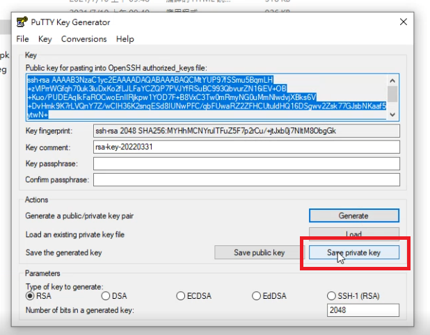
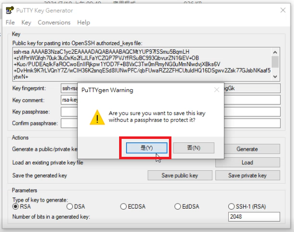
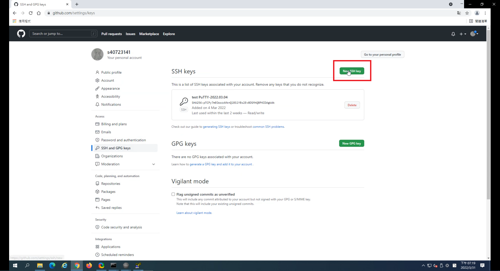
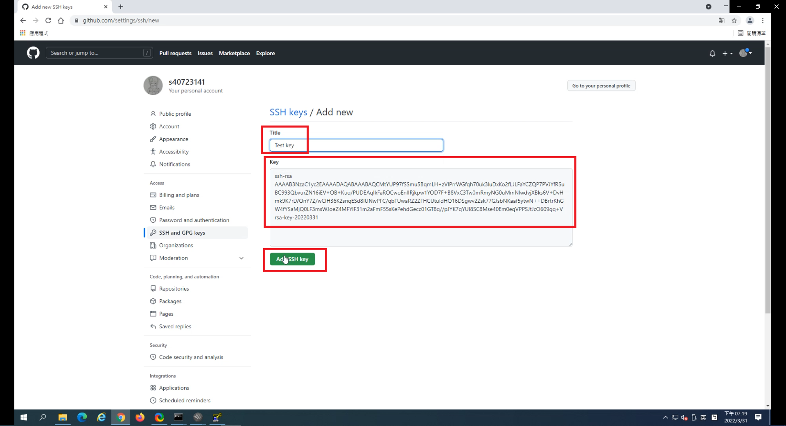
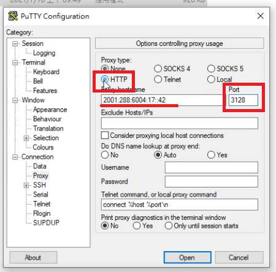
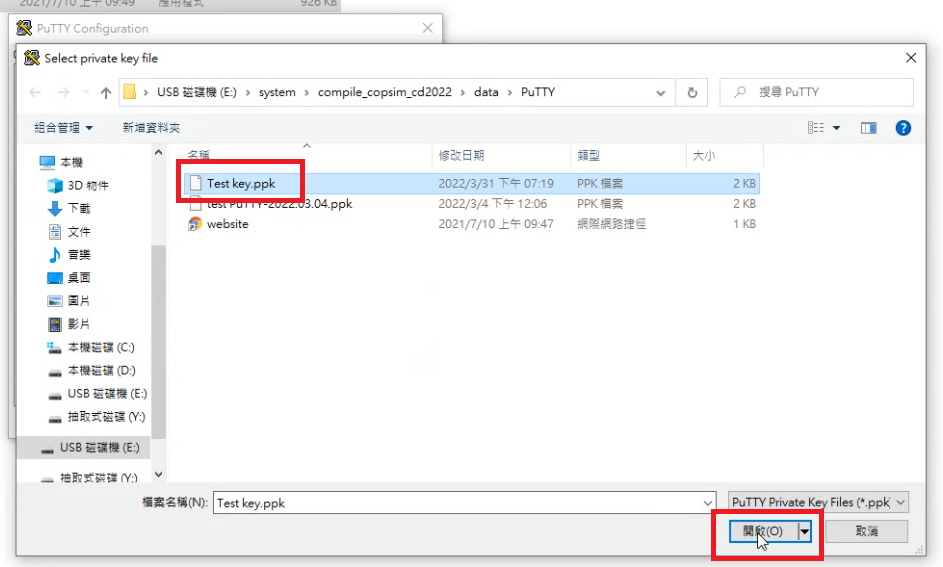

ShareX 狀況排除 <<
Previous Next >> nginx 設定
Putty & SSH & Key設定
為了方便執行Add，Commit，Push，這邊要開始進行Putty設定，用SSH設定近端與Github帳號間的連線，也就是所謂的Key，這樣一來，設定完成後就能省去每次A.C.P都要輸入電子郵件跟密碼的麻煩。
操作影片：https://youtu.be/COpwcMVqg_w
操作程序。
1.打開Puttygen程式
2.點選Generate
3.在空白區域滑動滑鼠，因為Key的亂碼是靠滑鼠在此區域裡移動來進行亂數產生的。

4.複製生成的Key碼
5.點選Save private key的按鈕生成ppk檔

6.點選確定

7.輸入存檔名稱

8.到Github官網，展開右上角帳號的下拉式個人選單，點選Settings
9.點選左側列表的SSH and GPG keys選項 
10.點選New SSH key按鈕在自己的Github帳號上生成鑰匙

11.貼上剛剛在Puttygen程式裡生成的Key碼，讓Github帳號的鑰匙跟可攜的鑰匙配對，輸入鑰匙名稱最後案Add SSH key按鈕

12.點選Putty.exe程式
13.在Session頁面底下的「Host Name(or IP address)」欄位輸入要連接的網頁，
「Saved Sessions」底下的空白欄位命名，按「Save」按鈕，

14.點選左側列表的「Proxy」頁面，
在「Host Name(or IP address)」欄位輸入學校的proxy碼[2001:288:6004:17::42] 、
在「Prot」欄位輸入埠號3128，接著在「Proxy type」欄位勾選「HTTP」選項。


15.點選左側列表「SSH」項目旁的「+」按鈕將其展開，點選底下的「Auth」頁面，按「Browse」按鈕選擇剛剛生成的ppk檔。


16.進入可攜系統的黑窗命令列輸入指令「regedit」
17.點選左側列表「HKEY_CURRENT_USER」資料夾旁邊的展開按鈕，
點選左側列表「SOFTWARE」資料夾旁邊的展開按鈕，
對底下「SimonTatham」按右鍵「匯出(E)」，
為匯出檔案命名，存檔，最後點選剛剛匯出的reg檔案，即完成設定。

ShareX 狀況排除 <<
Previous Next >> nginx 設定